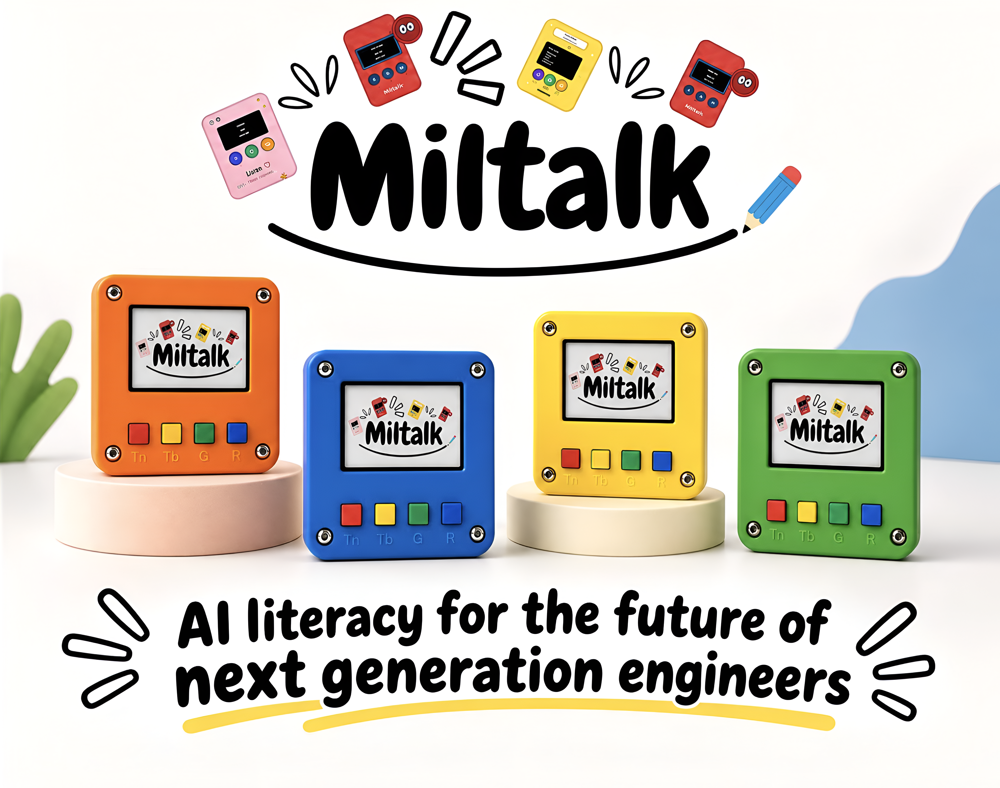
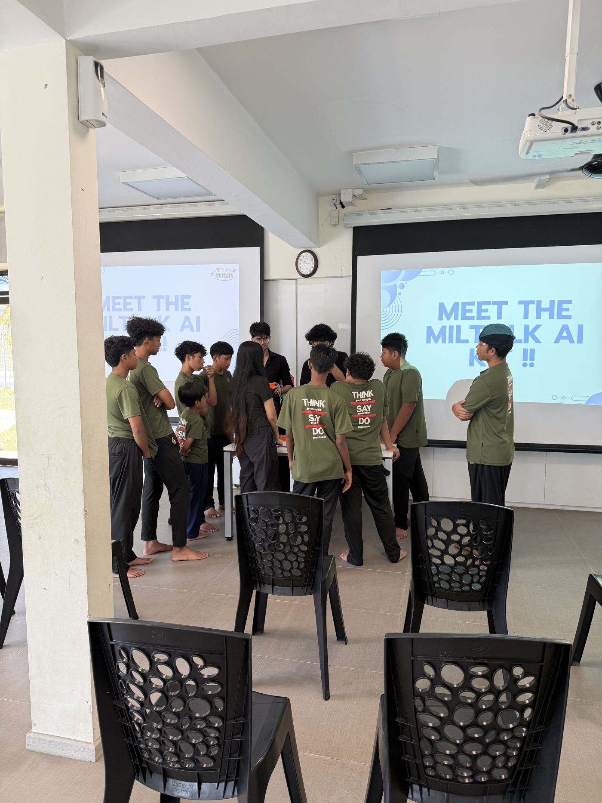
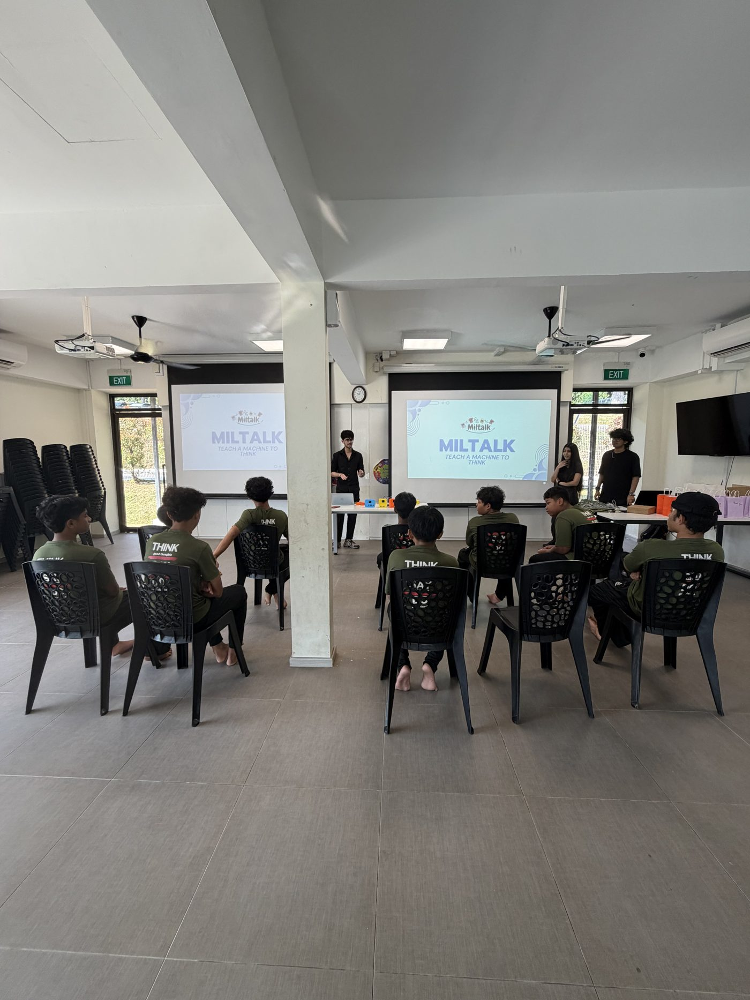
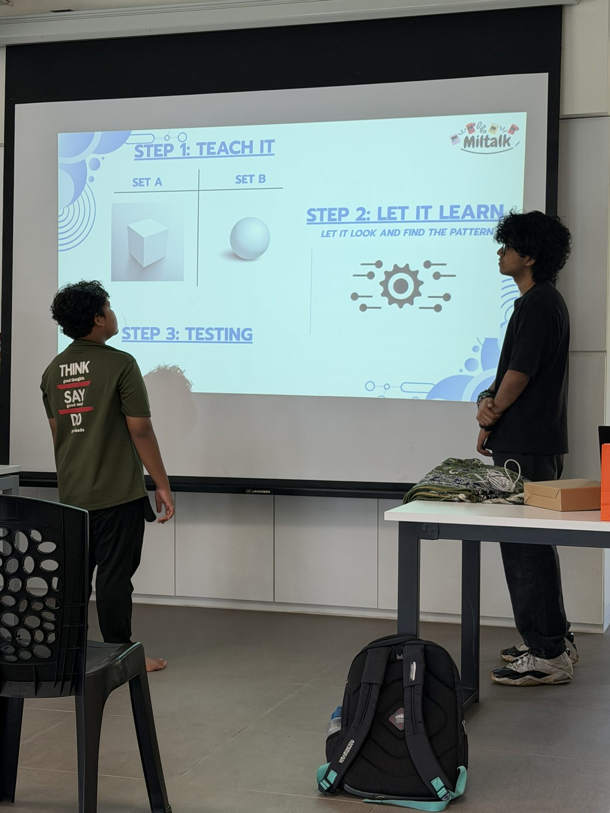

Forming a hypothesis,and testing it
Deciding what makes two things different, then checking if the machine agrees.

Almost every conversation about AI today is about generative AI — chatbots, image generators, tools that already exist and are ready to use. Kids grow up surrounded by them, but rarely see what's actually happening underneath: that these systems aren't magic, and they're built the same basic way — by learning patterns from examples, not by being handed a rulebook.
That gap is the actual problem.
Not that kids don't use AI — they already do, constantly — but that almost none of them have ever built the smallest working version of one themselves, or seen with their own eyes how it goes from confused to correct.
What kids already see
Generative AI — ready-made tools
What MilTalk shows them
Learning from examples
MilTalk is a hands-on AI education kit that lets students build and train a working AI model themselves — in minutes, with no laptop, no internet connection, and no accounts.
It's built for students roughly 12–15 years old, and for the classrooms and educators who want to teach AI as something you do, not just something you hear about.
Each kit is a small handheld device with a handful of buttons. A child shows it examples, tells it which category each example belongs to, and watches it learn — then tests whether it actually learned the right thing.
Physical interaction isn't decoration here — it's the whole point. Most AI education happens on a screen, at a level removed from the thing actually happening. MilTalk puts the entire learning loop — show, train, test, get it wrong, try again — into a child's hands, so the idea that “a machine learns from examples, not rules” is something they experience directly rather than something they're told. That difference is what turns a lesson into an intuition.
What children actually do: they collect their own examples (a sound, a color, a face, whatever they choose), sort them into two groups, train the device on those groups, and then test it on something new to see how confident and how correct it is — often immediately trying to “break” it or improve it once they see the result, which is exactly the curiosity the kit is designed to spark.

Look, spot, discover


Helps children collect pictures and try out their own sorting ideas.
A and B are your two categories — not random buttons. Press one, then show the kit a few examples of that kind of thing. Switch buttons for the second category.
Show it something new and get back a prediction plus a confidence score — how sure it is, not just a yes or no.
A wrong guess isn't a failure — it's a clue. Check the confidence score, then think about why: different lighting? a new angle? Add another example, or hit Reset to start clean.
Once it's trained, try something from a third category it's never seen at all. Does it force an answer anyway? How confident is it when it's clearly just guessing? That's exactly how real-world image classifiers reveal the edges of what they've actually learned — not just what they were shown.
Listen, clap, discover


Invites children to clap, whistle, talk and explore the sounds around them.
A and B are your two sound categories — not random buttons. Press one, then make a few examples of that kind of sound. Switch buttons for the second category.
Make a new sound and get back a prediction plus a confidence score — how sure it is, not just a yes or no.
A wrong guess isn't a failure — it's a clue. Check the confidence score, then think about why: too quiet? too close to the other category? Add another example, or hit Reset to start clean.
Try a completely unrelated “trick” sound it's never heard. Does it still force a guess? How sure does it seem? That's one of the best ways to see where a model's confidence is real, and where it's just doing its best with something unfamiliar.
Both kits share the same core build: a custom PCB and an ESP32 microcontroller, a TFT display for live feedback on prediction, confidence and training progress, physical buttons for the four actions, and battery power. No laptop, wifi, or account needed to run either one.
Deciding what makes two things different, then checking if the machine agrees.
Understanding that “80% sure” and “51% sure” mean different things, and that a system can be uncertain.
When a guess is wrong, figuring out which example to add or change, rather than retrying randomly.
Training it on only bright snacks and watching it fail on a new colour makes the idea of bias concrete, not abstract.
After building something real with their own hands, “AI” stops being a buzzword and becomes a specific, understandable mechanism — harder to be dazzled or fooled by overblown claims.
MilTalk isn't a concept on paper — it's been tested with real students, in a real classroom, with real results. Here's what's happened so far.
Pilot
In August 2026, we ran our first pilot with a group of 13–15 year-olds at Muhammadiyah Welfare Home, using both the Vision and Audio kits.
Students trained their own classifiers from scratch, tested them live, and — notably — kept experimenting well past the structured activity time, on their own initiative.
One student, without prompting, worked out on their own that the device wasn't “knowing” answers outright — it was comparing new examples to what it had already seen and picking whichever one it most resembled. That's a genuinely accurate description of how the system works, arrived at independently by a 13-year-old during free play.



A mentor who observed the pilot noted that MilTalk felt less like a standalone activity and more like something that could sit inside an actual curriculum — a strong signal that the format has real pedagogical legs, not just novelty appeal.
MilTalk has secured S$2,000 in funding through SUTD's Babyshark grant.
We're also in early conversations with the Singapore Association for the Deaf about a possible accessibility application — helping students who are deaf or hard of hearing tell emergency alarms from routine signals like a school bell.
That moment, when a guess comes back right and a child realises they taught it, is the whole reason Miltalk exists.
Bring the fun to your group
Miltalk is a bright fit for classrooms, clubs and camps.
Say hello